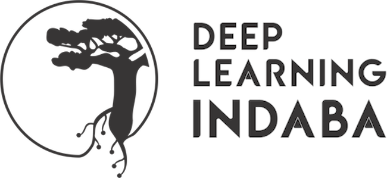
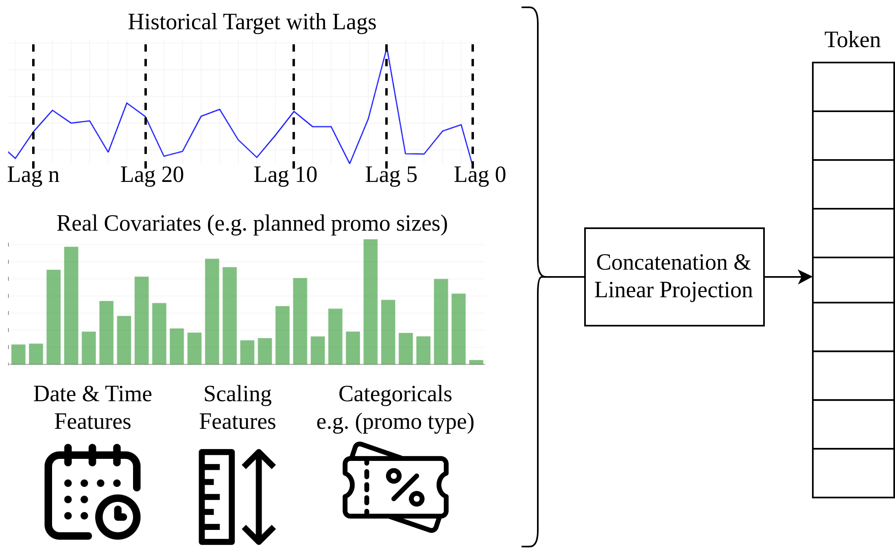
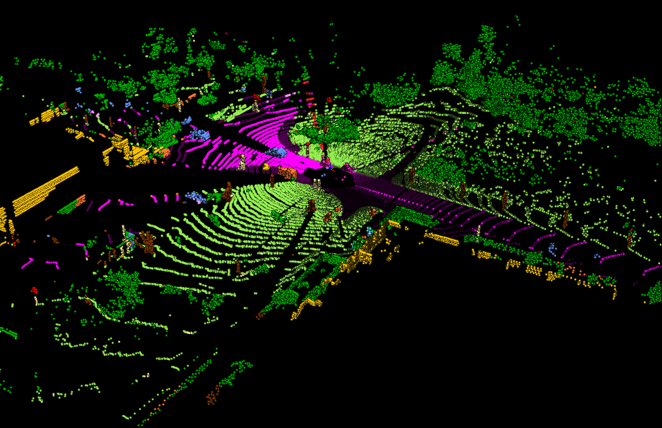
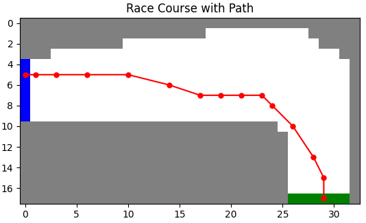

I am a Lead AI Engineer at Royal Sanders, where I work on applied AI within a manufacturing business. I began my industry career as a software engineer, but quickly found I was most engaged by problems without an established solution—where I could experiment, ask questions and develop my own approach. At heart, I think of myself as a student. I love learning, and I am happiest when I do not yet know the answer and have to work towards it. That curiosity drew me towards AI research and still defines the work I find most rewarding: working at the boundary between research and engineering, then turning promising ideas into systems people can actually use.
Previously, I was an AI Engineer and Researcher at Isazi Consulting, where I explored transformer-based forecasting, contributed to an open-source forecasting foundation model with a workshop paper at NeurIPS 2024, and worked on LLM-driven evolutionary algorithm discovery through XEvolve. Working in consulting and now within a manufacturing business has taught me the other side of this process. The most technically sophisticated solution is not necessarily the right one—a good solution has to reflect the actual problem, the available data, the organisation’s technical maturity and the people who will use it. I value being able to move between those worlds without losing either the curiosity of research or the pragmatism required to deliver something useful.
My journey began in 2013, building simple games under the guidance of my incredible IT teacher, Matthew Conradie, which sparked my passion for technology. I pursued Computer Engineering at the University of Pretoria, winning the best final-year project prize for a jigsaw puzzle-building robot. Supported by a bursary from AECI, I completed my MEng in the Intelligent Systems Group, where I developed a multi-projection fusion approach for LiDAR semantic segmentation, resulting in a publication in JVCI. During my studies, I contributed to the AELMSVR project, developing a dynamic VR mesh-rendering platform in Unreal Engine.
I care deeply about the African AI community and about using technology and education to expand opportunity. At the Deep Learning Indaba 2025 in Kigali, I independently organised a full-day workshop on AI for business and finance in Africa. I have also volunteered as a mentor to students from my university, and I want to continue passing on what I learn to people who are equally curious and willing to work for it. Additional interests include reinforcement learning, AI Safety & Alignment, chess, padel, and exploring the outdoors.
I independently organised the AI for Business and Finance in Africa: Challenges and Innovations full-day workshop at Deep Learning Indaba 2025 in Kigali, Rwanda.
The workshop explored how cutting-edge AI can be applied to Africa’s unique business challenges—driving scalable, ethical solutions for sectors like finance, retail, and logistics. What stayed with me most was seeing people from different countries, disciplines and backgrounds come together to share ideas and learn from one another.

An adapted multi-frequency transformer model for retail demand forecasting. Featured at NeurIPS 2024.
View Workshop Paper
My MEng project adapting LiDAR-based segmentation algorithms for natural domains.
View Journal Article
Building foundational RL skills with various excercises from the Introduction to Reinforcement Learning textbook.
View on GitHub